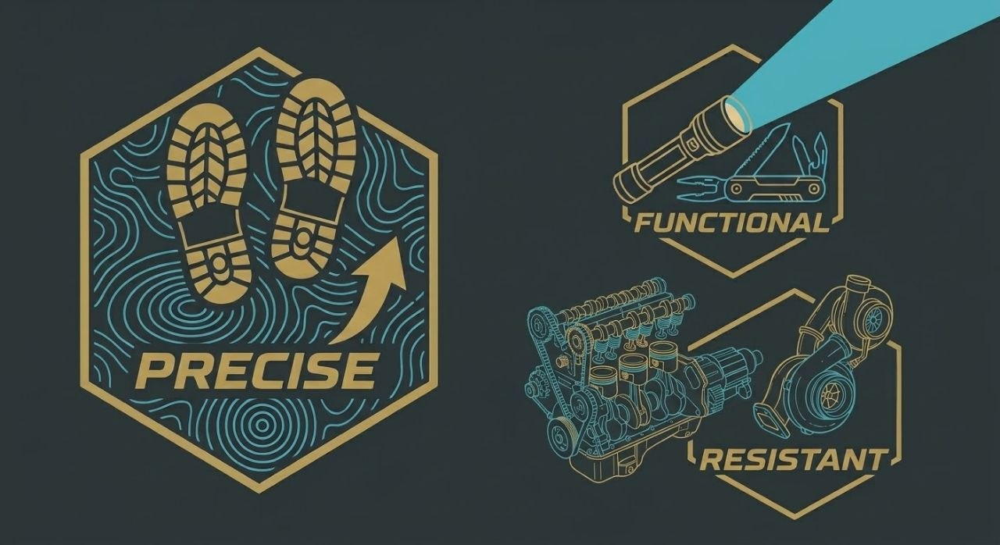

Windows app · free · open source
Hear everything.
Before anyone.
BOOST TATTIC is the free Windows app that cleans up Warzone and MW4 audio: footsteps, reloads and enemy voices up front. Boost Audio AI Engine at 16 channels, competitive presets and automatic EQ for your headphones.
Free · Open source · Windows 10/11 64-bit · latest release coming…
The problem
Stock audio loses you the fights that matter.
Buried footsteps
Your gun, bombardments and wash cover enemy footsteps exactly when you must decide to push or not.
Uncalibrated headphones
Every headphone colors sound its own way: without EQ you hear a distorted version of the battlefield.
Fragile setups
Voicemeeter and EQ chains that break at every Windows update, with extra latency on top.
It's not your hearing, it's the game's mix. One 16-channel engine separates sounds before they reach your headphones — footsteps, gunfire, ambience — lifts what matters and tames the rest. You decide how much.
Benefits
Built for players who compete.
Footsteps first
Enemies arrive on time — the Recon profile lifts enemy footsteps 3 dB while cutting the rest.
Your gun stays quiet
Foreign gunfire tamed up to 16 dB — stay composed even in close squad fights.
EQ for your headphones
Real calibration, not generic presets — 68 ready EQs + a 6,797-measurement database.
One app does it all
No Voicemeeter, no APO — mixer, engine, tray and Windows autostart built in.
Overlay + hotkeys
Switch presets without leaving the game — transparent overlay and Ctrl+Alt for weapon, style, volume and boost up to +12 dB.
Boost Audio AI Engine
302 parameters reasoning about sound — separates footsteps, gunfire and ambience and rebalances them in real time.
How it works
Three steps and you're in the match.
- 1
Install
Download the exe, install it, add the free VB-CABLE virtual cable. The guide below walks you through.
- 2
Route
In-game, pick TATTIC as audio output; Discord and browser stay straight on the headphones.
- 3
Dominate
Pick a preset (start with ClassicPlus-UltraLo), calibrate the EQ on your headphones and play.

Character
Precise. Functional.
Resistant.
- Precise — every footstep in place, every dB under control.
- Functional — one tool that does everything, no fragile chains.
- Resistant — a setup that survives patches, seasons and meta shifts.
Install guide
From zero to in-game in ten minutes.
Download the installer
Hit Download for Windows above: the latest GitHub release opens with the
.exe. Run it and finish the install.Install VB-CABLE
Download VB-CABLE Virtual Audio Device (free, vb-audio.com), install it and reboot. The app renames it to TATTIC by itself.
Set up the game
In Warzone: audio output to TATTIC, 16 channels at 48 kHz. Discord, browser and system sounds stay on the real headphones: Windows mixes them.
Start the audio
Open BOOST TATTIC, pick the headphones as output and press Start audio: you should see channels moving already in the lobby. From here it lives in the system tray and starts with Windows.
Pick the preset
Start with ClassicPlus-UltraLo, then try the TATTIC 1 styles (Recon recommended for footsteps). Weapon level with Ctrl+Alt+1…5.
Overlay and hotkeys
Enable the overlay in Settings (needs the game in borderless fullscreen). Quick memo: Ctrl+Alt+O overlay, B bypass, ↑↓ volume, PgUpPgDn boost.
Requirements
Windows 10/11 64-bit · any headphones · VB-CABLE (free) · ~150 MB free
Not needed
Voicemeeter · Equalizer APO · dedicated sound card · account · credit card
FAQ
Clear before you download.
Is it really free?
Yes. Free and open source, no account or subscription. The only external software, VB-CABLE, is free for personal use.
Will I get banned?
No: BOOST TATTIC doesn't modify the game, inject code or read its memory — it only processes Windows audio output like a virtual mixer. Activision has the final say, as always.
Does it work with my headphones?
Yes, with any headphones: 68 ready EQs plus a 6,797-measurement database to calibrate yours.
Do I need a special sound card?
No. Windows 10/11 64-bit and any headphones are enough. Everything else is software.
Does the overlay work fullscreen?
It works with the game in borderless fullscreen, not exclusive fullscreen. Ctrl+Alt hotkeys always work.
Do I need Voicemeeter?
No. BOOST TATTIC does it all: mixer, engine, tray, autostart. No Voicemeeter, no Equalizer APO.
How do I get updates?
From the app's Updates page: the preset library updates from there, for the app download the new GitHub release.
I hear nothing, what do I check?
Three things, in order: output to TATTIC in the game; Start audio in the app; virtual cable at 16 channels and 48 kHz.
Install in 5 minutes,
feel it from the first fight.
⬇ Download BOOST TATTIC free
Windows 10/11 64-bit · open source · code on GitHub